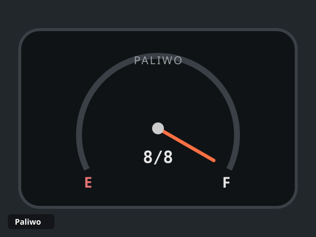
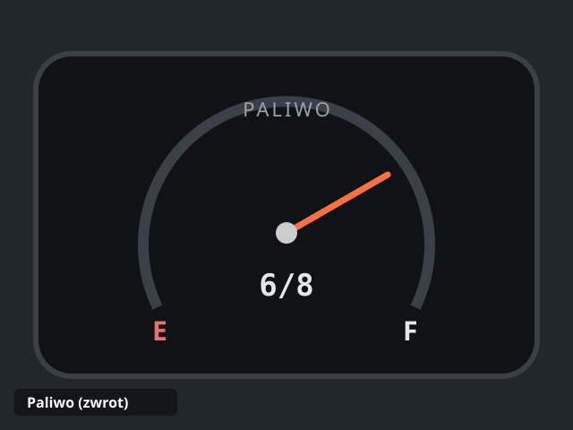
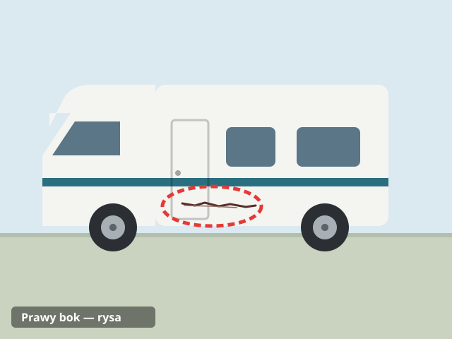

Rozliczenie kaucji
R-2027-014 · Anna Kowalska · Ducato alkowa, NGI 4K27 · kaucja 5 000 zł
Potrącenia z kaucji
według Cennika usług dodatkowych i kar (zał. nr 4)| Pozycja | Wydanie / zwrot | Cennik | Kwota |
|---|---|---|---|
| Brak paliwa 8/8 przy wydaniu, 6/8 przy zwrocie — brakuje 22 l (bak 88 l) 22 l × 8 zł + 100 zł za tankowanie |
  |
poz. 30 | 276 zł |
| Brak kompletu kluczyków kluczyk do pojazdu: wydano 2 komplety, zwrócono 1 |
lista wyposażenia z protokołu | poz. 24 | 300 zł |
|
Rysa prawy bok ok. 30 cm, do podkładu, wysokość drzwi — polerowanie (poz. 19) nie wystarczy |
  |
poz. 21 | 400 zł |
| Potrącenia razem | 976 zł | ||
Potrącenia automatyczne z protokołu zwrotu: 576 zł (poz. 30 i 24). Pozycja „do wyceny”: 400 zł (poz. 21).
Stan przy zwrocie
- Zwrot
- 21.07.2027, 16:00 — w terminie
- Przebieg
- 49 870 km (przy wydaniu 48 230 km)
- Paliwo
- 6/8 (przy wydaniu 8/8)
- Kontrola według cennika
- czystość wnętrza, zwierzę, kaseta toalety, dym, zbiornik wody, terminowość — bez uwag
- Protokół zwrotu
- podpisany 21.07.2027 przez obie strony · otwórz
Kaucja
- Kaucja przyjęta (gotówka, 11.07.2027)
- 5 000 zł
- Brak paliwa (poz. 30)
- − 276 zł
- Brak kompletu kluczyków (poz. 24)
- − 300 zł
- Rysa prawy bok (poz. 21)
- − 400 zł
- Potrącenia razem
- 976 zł
- Do zwrotu
- 4 024 zł
- Termin zwrotu kaucji
- 28.07.2027 (7 dni od zwrotu)
- Data rozliczenia
- 23.07.2027
Forma zwrotu kaucji
Kaucja rozliczona
Najemca odpowiada też za szkody z okresu najmu ujawnione po zwrocie (Regulamin, rozdz. IX). Gdy kaucja nie pokrywa szkód — dopłata w ciągu 14 dni od zawiadomienia (Regulamin, rozdz. VI).
Wiadomość do klienta
E-mail do anna.kowalska@example.com
Dzień dobry,
dziękujemy za wspólny urlop z Ducato alkowa. Rozliczyliśmy kaucję za najem R-2027-014:
kaucja 5 000 zł, potrącenia 976 zł (paliwo 276 zł, kluczyk 300 zł, naprawa rysy 400 zł).
Zwracamy 4 024 zł przelewem do 28.07.2027. Zestawienie ze zdjęciami w załączniku.
Kamper na Mazury, Marek Wiśniewski